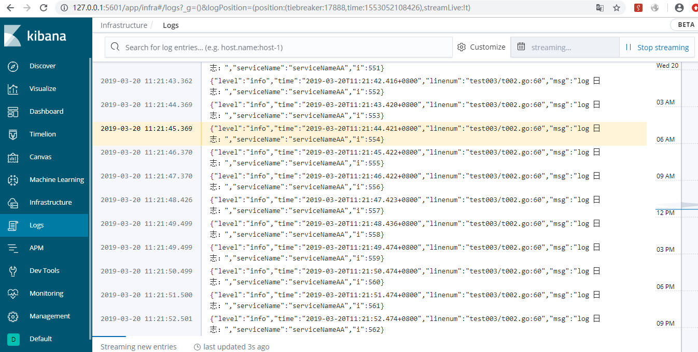

golang日志收集方案之ELK原文出处:本文由博客园博主hotion提供。
原文连接:https://www.cnblogs.com/hotion/p/10651807.html
每个系统都有日志，当系统出现问题时，需要通过日志解决问题
当系统机器比较少时，登陆到服务器上查看即可满足
当系统机器规模巨大，登陆到机器上查看几乎不现实
当然即使是机器规模不大，一个系统通常也会涉及到多种语言的开发，那么问题来了，每次系统出问题了，如何能够迅速查问题?
好一点的情况可能是python应用层查日志发现是系统底层处理异常了，于是又叫C++同事来查，如果C++这边能够迅速定位出错误告知python层这边还好，如果错误好排查，
可能就是各个开发层的都在一起查到底是哪里引起的。当然可能这样说比较笼统，但是却引发了一个问题：
当系统出现问题后，如何根据日志迅速的定位问题出在一个应用层？
在平常的工作中如何根据日志分析出一个请求到系统主要在那个应用层耗时较大？
在平常的工作中如何获取一个请求到达系统后在各个层测日志汇总？
针对以上问题，我们想要实现的一个解决方案是：
把机器上的日志实时收集，统一的存储到中心系统
然后再对这些日志建立索引，通过搜索即可以找到对应日志
通过提供界面友好的web界面，通过web即可以完成日志搜索
关于实现这个系统时可能会面临的问题：
实时日志量非常大，每天几十亿条(虽然现在我们公司的系统还没达到这个级别)
日志准实时收集，延迟控制在分钟级别
能够水平可扩展
关于日志收集系统，业界的解决方案是ELK
对于日志来说，最常见的需求就是收集、存储、查询、展示，开源社区正好有相对应的开源项目：logstash（收集）、elasticsearch（存储+搜索）、kibana（展示），
我们将这三个组合起来的技术称之为ELKStack，所以说ELKStack指的是Elasticsearch、Logstash、Kibana技术栈的结合，由这三个软件及其相关的组件可以打造大规模日志实时处理系统。
实际使用中，在Logstash上加了一层Beat,
Beats是用于单用途数据托运人的平台。它们以轻量级代理的形式安装，并将来自成百上千台机器的数据发送到Logstash或Elasticsearch。
（画外音：通俗地理解，就是采集数据，并上报到Logstash或Elasticsearch）
elasticsearch下载地址：https://www.elastic.co/downloads/elasticsearch
logstash下载地址：https://www.elastic.co/downloads/logstash
kibana下载地址：https://www.elastic.co/downloads/kibana
filebeat下载地址：https://www.elastic.co/products/beats/filebeat
也可直接docker安装ELK镜像
docker run -p 5313:5044 -p 5314:5601 -p 5315:9200 -p 5316:9300 \
-e ES_JAVA_OPTS="-Xms256m -Xmx512m" \
-e ES_MAX_MEM=1024m \
-v /elk:/var/lib/elasticsearch -d -i -t --restart always --name=elk01 sebp/elk
我在项目中用uber的zap处理日志，然后用filebeat转发至logstash，数据存储在es，最后展示在kibana。
